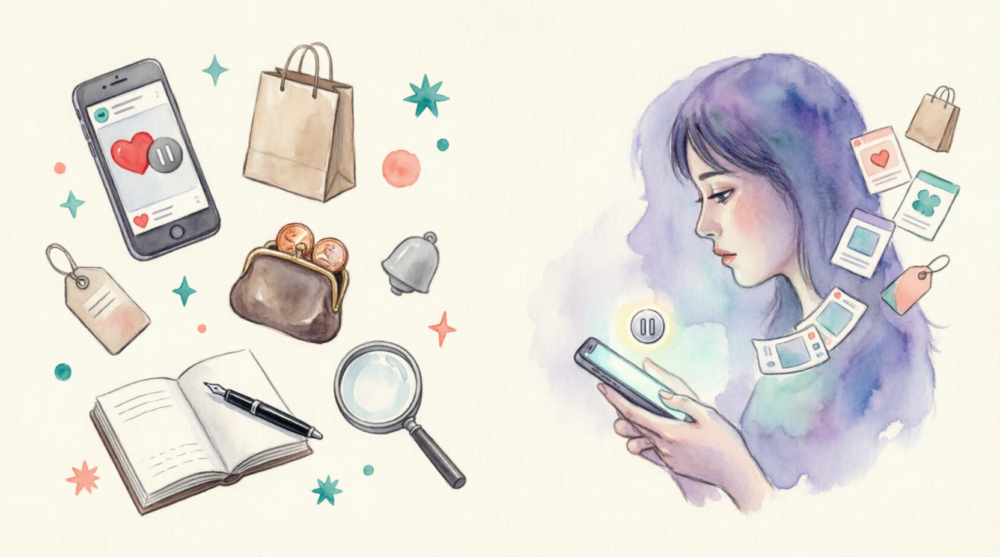

Can it help you control your spending?
1. When was the last time you bought something because an influencer recommended it?
2. Do you trust product reviews on social media? Why or why not?
Exploring the hype around social media's latest, but most authentic, habit and how it could help you
When was the last time you bought something simply because you saw someone you trust talk about it on social media? Shopping habits have changed drastically in recent years, and it's easy to see how our decisions are impacted by those we follow online. In fact, Sprout Social reports that 55% of TikTok users have purchased something after seeing the brand recommended on the app, and while reviews and recommendations can be helpful when considering your options, the problem arises when you find yourself convinced to spend cash on things you didn't intend to buy. With influencers regularly receiving payment in exchange for promoting specific items, as well as mental health services such as online therapy, it's hard to know who to trust.
When it comes to your mental health, unplanned overspending can lead to anxiety around money, as well as guilt surrounding the unused items gathering dust in your home. For the eco-conscious, knowing that you're potentially adding to landfill through purchases you regret adds another layer of discomfort. It might even lead to a sense of disconnect from your own wants and needs, where you feel unable to make choices without having negative consequences.
But a new movement is rising where, instead of recommending their supposed 'favourite' products to their audience, influencers choose to advise you on items you shouldn't waste your money on. In an online world where paid product placements are now as common as traditional advertisements, marketing statistics from the UK show that 48% of millennial consumers find this marketing model more authentic than other advertising techniques, according to Cure Media.
Whether you're looking for the best moisturiser, fitness app, or even a new therapist, the choice can be overwhelming when social recommendations come into the picture. With that in mind, here is how you can lean into the de-influencing trend, and control your spending when it comes to taking care of your wellbeing.
Social media marketing thrives on creating a sense of urgency when you view their content. There's a certain thrill that comes from being an early adopter of a new wellness product, or finding a well-kept secret that could boost your happiness. But if something is being hailed as a 'cure-all' product, or the 'next big thing', take it with a pinch of salt. Consider holding back and allowing time to pass before you make a decision. In a few weeks, the buzz may well have faded, and you'll be pleased you didn't get sucked into the excitement, without evidence to back it up.
While social media has been a powerful tool for raising awareness about mental health concerns, and has, arguably, done some heavy lifting when it comes to ending the stigma around mental illness, not all information online is factually accurate or relevant. For example, one study in The Canadian Journal of Psychiatry showed that as little as 21% of ADHD-related information on TikTok was scientifically accurate, and roughly 50% of videos were misleading, so you should make sure to cross-reference any medical claims with reliable sources before making any related purchases. Be sensibly suspicious of any medical studies that are funded by organisations with a vested interest in the outcome.
Science tells us that we love to make an impulse purchase, because it gives us pleasure. Take a brief pause before you add-to-cart, and consider exactly what emotion you are trying to evoke with each particular purchase. Joy? Calm? Rest? Energy? Now write down a list of 10 ways you can elicit this emotion, either for free or through existing means. For example, instead of a calming pillow spray, you might decide to meditate for a few minutes before bed.
There are tons of helpful posts on social media, which are written by bona fide experts in their field. It can be tempting to jump straight into buying a course or paying hundreds of pounds to have a consultation with someone, but many authors and coaches have blogs and podcasts that are filled with free, readily available information to give you a taste before you commit. Looking to try meditation? Before subscribing to a new app, check Eventbrite for free events, or your local Buddhist centre for taster sessions. Thinking of booking Reiki? Call your local practitioner to talk it through, and find out if it really meets your needs. Aim to find a way to dip your toe before you dip into your purse.
Whenever you're tempted to make an impulse purchase, make a note of the item and the cost. You're essentially keeping track of the things you desired but didn't buy, which gives you a lovely list of all the times you exerted impulse control. Go you! At the end of the week, check the list to tally up how much money you've saved. If there's anything on the list you still want to buy, now is the time to spend mindfully.
When it comes to entering those card details and making your purchase, take a few minutes to write down the emotions associated with what you're buying. Try this technique:
- Take a few deep breaths, and open your journal.
- Now, imagine that you're holding the item or experiencing the service you want to buy. Envision yourself using the product or service. Journal from that perspective, describing how you feel, how your life has been changed, your mood, and the impact on your mental health.
- Once you're finished, start another journal entry that takes place on the same day but without the product or service in question. Write about how you feel, how your mood is, and what your mental health looks like.
- Is there a tangible difference between the two? Is the outcome of making the purchase worth the money you intend on spending?
Social media might have become ingrained in our lives, but the call for more authenticity is always a welcome one. So, just remember, next time you're urged to purchase a must-have item from someone you follow, take a moment to pause, and consider whether this is something you actually need – you might just discover de-influencing is the biggest game-changer after all.
Exploring the hype around social media's latest, but most authentic, habit and how it could help you
When was the last time you bought something simply because you saw someone you trust talk about it on social media? Shopping habits have changed extremely (d…) in recent years, and it's easy to see how our decisions are impacted by those we follow online. In fact, Sprout Social reports that 55% of TikTok users have purchased something after seeing the brand recommended on the app, and while reviews and recommendations can be helpful when considering your options, the problem arises when you find yourself persuaded (c…) to spend cash on things you didn't intend to buy. With influencers regularly receiving payment in exchange for promoting specific items, as well as mental health services such as online therapy, it's hard to know who to trust.
When it comes to your mental health, unplanned overspending can lead to anxiety around money, as well as guilt surrounding the unused items gathering dust in your home. For the eco-minded (eco-c…) , knowing that you're potentially adding to landfill through purchases you regret adds another layer of discomfort. It might even lead to a sense of disconnect from your own wants and needs, where you feel unable to make choices without having negative consequences.
But a new movement is rising where, instead of recommending their supposed 'favourite' products to their audience, influencers choose to advise you on items you shouldn't waste your money on. In an online world where paid product placements are now as common as traditional advertisements, marketing statistics from the UK show that 48% of millennial consumers find this marketing model more authentic than other advertising techniques, according to Cure Media.
Whether you're looking for the best moisturiser, fitness app, or even a new therapist, the choice can be confusing (o…) when social recommendations come into the picture. With that in mind, here is how you can lean into the de-influencing trend, and control your spending when it comes to taking care of your wellbeing.
Be aware of trends
Social media marketing is fueled by (t…) creating a sense of urgency when you view their content. There's a certain thrill that comes from being an early adopter of a new wellness product, or finding a well-kept secret that could boost your happiness. But if something is being hailed as a 'cure-all' product, or the 'next big thing', take it with a pinch of salt. Consider holding back and allowing time to pass before you make a decision. In a few weeks, the hype (b…) may well have faded, and you'll be pleased you didn't get sucked into the excitement, without evidence to back it up.
Beware of self-diagnoses
While social media has been a powerful tool for raising awareness about mental health concerns, and has, arguably, done some heavy lifting when it comes to ending the a strong feeling of disapproval (s…) around mental illness, not all information online is factually accurate or relevant. For example, one study in The Canadian Journal of Psychiatry showed that as little as 21% of ADHD-related information on TikTok was scientifically accurate, and roughly 50% of videos were misleading, so you should make sure to cross-reference any medical claims with reliable sources before making any related purchases. Be sensibly suspicious of any medical studies that are funded by organisations with a vested interest in the outcome.
Practise purchase pausing
Science tells us that we love to make an impulse purchase, because it gives us pleasure. Take a brief pause before you add-to-cart, and consider exactly what emotion you are trying to recall (e…) with each particular purchase. Joy? Calm? Rest? Energy? Now write down a list of 10 ways you can elicit this emotion, either for free or through existing means. For example, instead of a calming pillow spray, you might decide to meditate for a few minutes before bed.
Research free versions first
There are tons of helpful posts on social media, which are written by qualified (b…f…) experts in their field. It can be tempting to jump straight into buying a course or paying hundreds of pounds to have a consultation with someone, but many authors and coaches have blogs and podcasts that are filled with free, readily available information to give you a taste before you commit. Looking to try meditation? Before subscribing to a new app, check Eventbrite for free events, or your local Buddhist centre for taster sessions. Thinking of booking Reiki? Call your local practitioner to talk it through, and find out if it really meets your needs. Aim to find a way to dip your toe before you dip into your purse.
Start a 'didn't buy' list
Whenever you're tempted to make an impulse purchase, make a note of the item and the cost. You're essentially keeping track of the things you desired but didn't buy, which gives you a lovely list of all the times you exerted impulse control. Go you! At the end of the week, check the list to calculate (t… u…) how much money you've saved. If there's anything on the list you still want to buy, now is the time to spend mindfully.
Journal through the decision-making process
When it comes to entering those card details and making your purchase, take a few minutes to write down the emotions associated with what you're buying. Try this technique:
- Take a few deep breaths, and open your journal.
- Now, imagine that you're holding the item or experiencing the service you want to buy. Imagine (e…) yourself using the product or service. Journal from that perspective, describing how you feel, how your life has been changed, your mood, and the impact on your mental health.
- Once you're finished, start another journal entry that takes place on the same day but without the product or service in question. Write about how you feel, how your mood is, and what your mental health looks like.
- Is there a noticeable (t…) difference between the two? Is the outcome of making the purchase worth the money you intend on spending?
Social media might have become ingrained in our lives, but the call for more authenticity is always a welcome one. So, just remember, next time you're urged to purchase a must-have item from someone you follow, take a moment to pause, and consider whether this is something you actually need – you might just discover de-influencing is the biggest abrupt change (g…) after all.
Shopping habits have changed drastically in recent years. We've moved from predictable mall visits to an infinite, always-open digital marketplace. While this convenience is hailed as a game-changer, the sheer volume of choice and persuasive technology can be utterly overwhelming. This is where the new skill of mindful consumption comes into the picture.
The modern retail engine thrives on instant gratification. Platforms are designed to create a buzz around products, using algorithms that evoke emotions and deliberately blur the line between wants and needs. It's tempting to get sucked into this cycle, leading to the common problem of unplanned overspending. That "must-have" item that prompts an impulse purchase often fails to boost your happiness in the long term.
So, how do you navigate this landscape? The first rule is to take it with a pinch of salt. Glowing reviews, influencer endorsements, and "limited-time" offers often serve someone else's vested interest. Be sensibly suspicious.
Before you click "buy," take a brief pause. Talk it through - either with a friend or in your own head. Ask: "Does this meet my needs, or just a fleeting want?" Tally up the real cost, not just monetary but in space and long-term use.
When researching, don't let a single source do all the heavy lifting. A five-star rating is meaningless unless you back it up with evidence. Cross-reference reviews on different sites and seek out factually accurate information from neutral parties. Is that miracle product review on a blog that also sells it? Time to be suspicious.
This mindful approach needs to become ingrained in your routine. It transforms shopping from a reactive hobby to a purposeful activity. You move from being a target of marketing to being a curator of your own life.
Ultimately, the power is in the pause. By interrupting the impulse, you reclaim control. You ensure your purchases serve you, not just the bottom line of a company. In a world designed to make you consume, the most radical act is to buy with intention.
1. According to the article, what is the main reason shopping has become overwhelming in recent years?
2. What two major problems does the article link to impulsive shopping behavior?
3. What is the game-changer strategy the article recommends to combat impulse buying?
4. Why does the author advise shoppers to take marketing claims with a pinch of salt?
5. What does the phrase a vested interest mean when referring to an online reviewer or influencer?
What is the "de-influencing" trend, and how can it help people control their spending?
When it comes to shopping, how do you avoid getting sucked into the online buzz around a product hailed as a must-have?
1. The article suggests several strategies to control spending. List four of them.
2. How can an advertisement evoke emotions so powerfully that it makes you want to buy something? Have you ever bought something primarily because an ad managed to elicit strong emotions?
3. Should paid product placements on social media always be clearly marked?
4. In what ways has social media done heavy lifting in raising awareness about mental health?
5. Do you ever cross-reference sources before believing a social media post?
6. Do you follow any bona fide experts online? How do you know they're trustworthy?